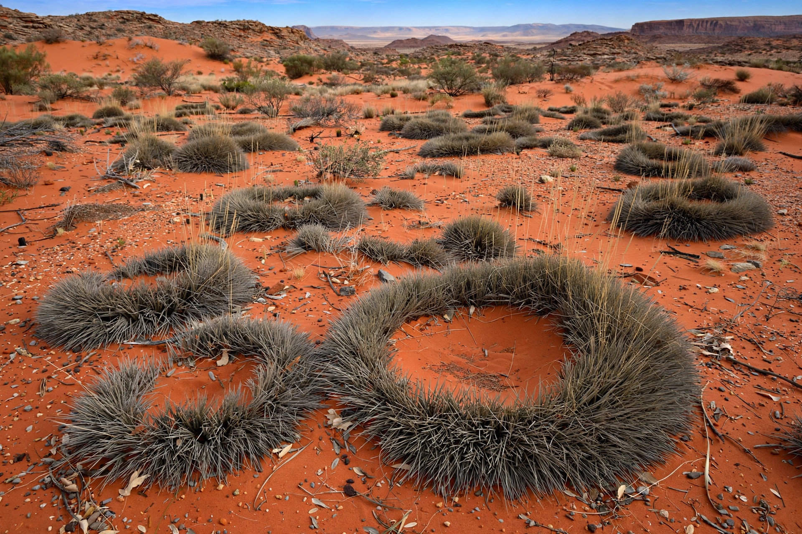

| Kingdom | Plantae |
|---|---|
| Order | Poales |
| Family | Poaceae |
| Genus | Triodia R.Br. |
Triodia is a genus of xerophytic grasses endemic to Australia, commonly known as spinifex. Species of Triodia form low, dense, spiny hummocks and dominate the understorey vegetation over vast areas of the Australian arid and semi-arid zones — hummock grasslands cover roughly a fifth to a quarter of the continent, mainly in Western Australia, the Northern Territory, South Australia and western Queensland.
Triodia species are perennial tussock grasses whose stiff, sharply pointed (pungent) leaves radiate from a central base to form a cushion or ring-shaped hummock. Older hummocks often die back in the centre, producing the characteristic ring form. The leaves contain silica and resin, making them unpalatable and highly flammable. Some sixty or more species are recognised, including Triodia basedowii, T. pungens and T. scariosa.
Spinifex hummocks provide critical shelter for a wide range of desert fauna, including small marsupials, reptiles and birds, protecting them from predators and temperature extremes. The grasslands are highly fire-prone: resinous spinifex burns readily, and fire regimes — traditionally managed by Aboriginal burning practices — shape the mosaic of the vegetation. Many species resprout after fire, while others regenerate from seed.
Aboriginal Australians traditionally collected resin from species such as Triodia pungens by threshing the grass; the resin was heated and used as a strong adhesive (spinifex gum) for hafting stone tools and repairing implements. The seeds of some species were ground for food. Triodia should not be confused with the coastal dune grasses of the genus Spinifex, with which it shares the common name.